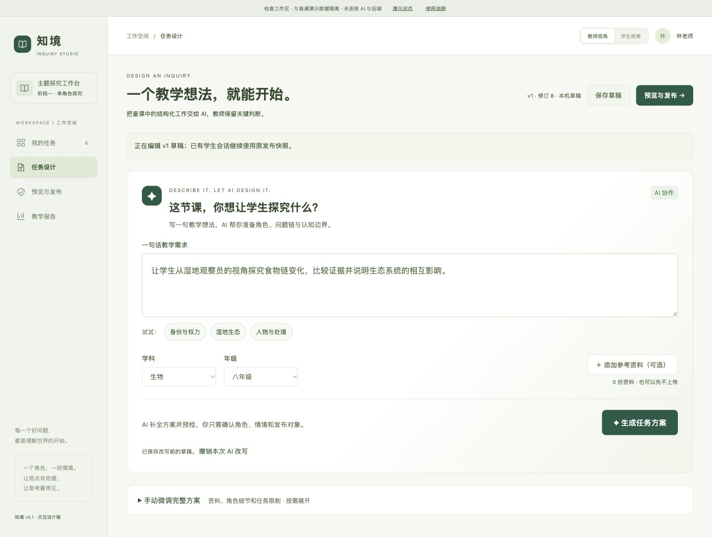
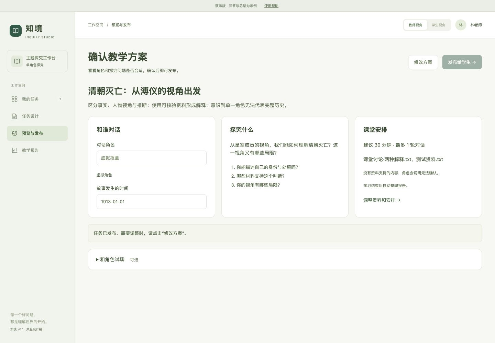
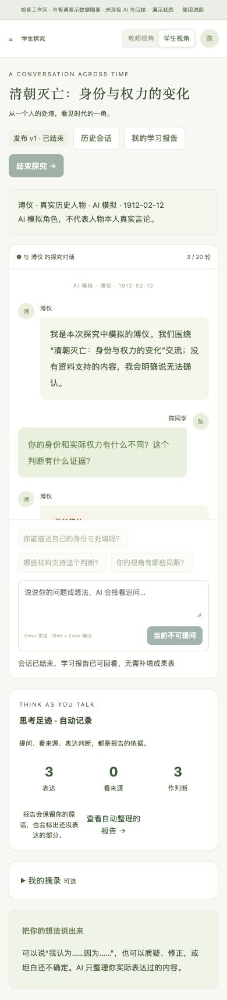
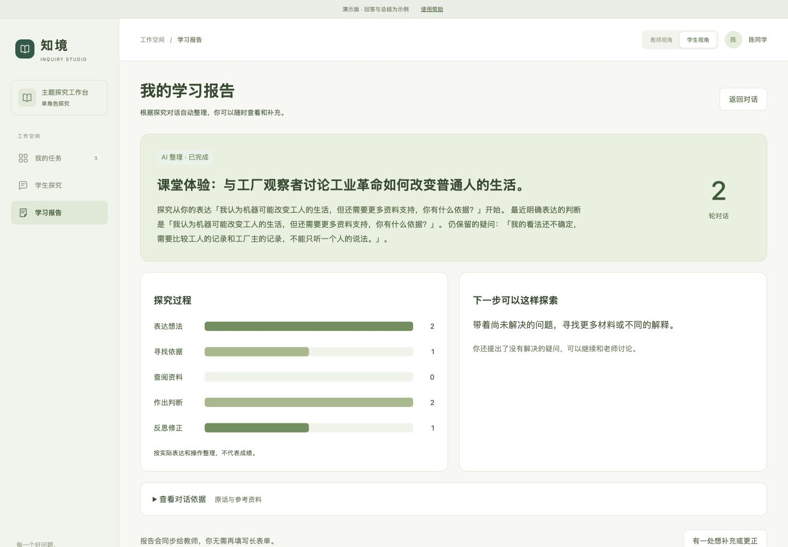
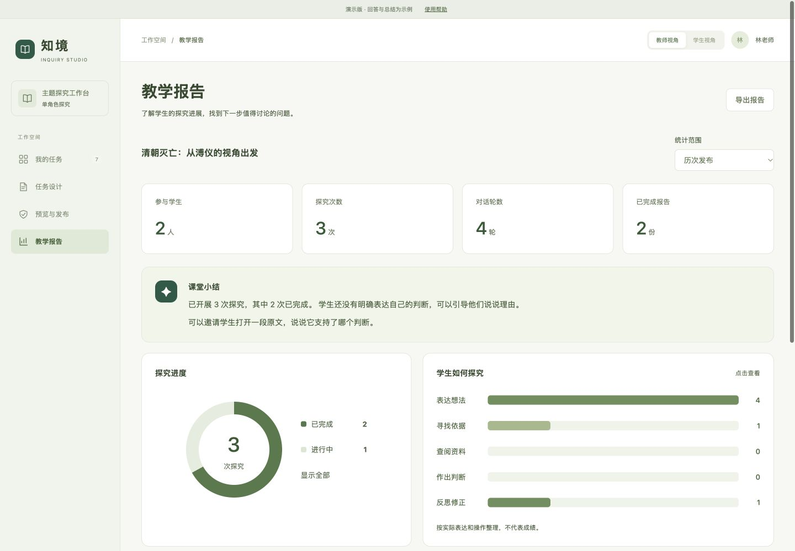

资料能力属于阶段二
阶段一可以暂不实现资料解析、来源位置和点击原文定位。
InquiSpace 的产品设计、技术决策与 AI 协作实践
单角色沉浸式探究学习系统 · 项目答辩

让教师创建一个有明确身份和资料边界的角色，引导学生持续探究，并留下可核对的学习过程。
阶段一可以暂不实现资料解析、来源位置和点击原文定位。
原文第六节已经把资料与来源列为核心功能，阶段验收不能覆盖通用约束。
支持 PDF/TXT、证据检索、来源位置和原文定位，资料不足时明确无法确认。
教师给出一句教学设想，其余信息由 AI、默认值和必要追问补齐。
AI 整理学生已经表达的内容，但不替学生补出结论或观点变化。
实现较轻，但无法核验回答依据，也无法完成原文回查。
功能丰富，但角色切换、记忆隔离和发言调度会放大不确定性。
保留资料解析、证据检索、原文定位、角色边界和教师确认。
最小实现的目标是缩小验证范围，同时保留决定教学可信度的能力。
识别歧义和通用约束
锁定阶段一验收范围
确定最小闭环和实施顺序
设计接口、状态与数据结构
通过实际操作修正流程
验证规则、约束和异常处理
按需求用例保留证据
教师、学生与报告界面
接口校验与业务服务
生成、检索、核验与保存
统一模型调用与输出校验
jieba 分词与受控资料检索
事务、版本、引用与原始资料
| 比较项 | 当前选择 | 暂不选择 | 升级条件 |
|---|---|---|---|
| 数据库 | SQLite | PostgreSQL | 多实例部署或并发写入明显增加 |
| 资料检索 | BM25 | 向量检索 | 真实问法持续漏检，关键词召回不足 |
| 流程编排 | 显式 Python 流程 | LangChain / LangGraph | 分支、并行与恢复逻辑显著复杂 |
| 模型能力 | 模型 API | 自建推理 | 数据安全、成本或延迟要求无法满足 |
| 后台任务 | 单进程运行状态 | Redis / Celery | 需要跨进程队列、长期任务或水平扩展 |
这些取舍来自阶段一的小规模验收目标，尚未进行多套技术栈的性能实测。
界面越简洁，后台越需要明确状态、事务和数据来源。
| 交互调整 | 接口和数据设计 |
|---|---|
| 一句话生成教学方案 | 保存生成结果、人工修改保护和撤销记录 |
| 学生结束后自动生成报告 | 区分学习完成与报告生成状态，保存输入快照并支持单独重试 |
| 学生补充或更正 | 保留原始报告和原话，追加独立更正记录 |
教师逐项填写主题、目标、角色、时间和资料范围。学生对话结束后还要重复填写结论、角色观点和反思。
AI 已能生成方案和报告，但教师仍会看到“AI 发布前检查”等专业名词，学习报告还直接展示运行轨迹和 JSON。
教师只看角色、探究内容和课堂安排。学生完成对话即可结束，检查和技术记录全部留在系统内部。




报告只整理学生已经表达的观点，原话与资料来源可以继续回查。
“教师和学生要填写的内容太多了。教师发布任务时应该让 AI 承担更多准备工作；学生的思考体现在对话过程中，不需要再填写大量成果内容。”
教师通过一句话生成任务，学生对话后自动形成报告，教师通过图表查看过程。
页面继续展示检查卡片、运行轨迹和 JSON。功能正确，但真实师生不需要理解这些内部概念。
教师确认角色、探究内容和课堂安排。学生直接对话，报告优先展示小结、图表和原话依据。
AI 负责：提出方案、修改原型、同步详细设计与接口数据文档。
我负责：判断真实用户是否需要这些操作，并通过页面操作与测试验证修改结果。
结构化信息容易收集，但教师和学生需要重复填写，操作脱离教学活动。
操作简单，但报告可能出现学生没有表达过的判断和观点变化。
在对话中表达判断、依据和反思。
生成方案、提出追问、整理已有表达。
确认教学内容、发布对象和报告使用。
管理权限、状态、引用和可核对统计。
报告失败可以单独重试，学习过程、原话和原始报告继续保留。
使用 AI 完成复杂项目的关键，是建立清晰的边界、判断标准和验证机制。